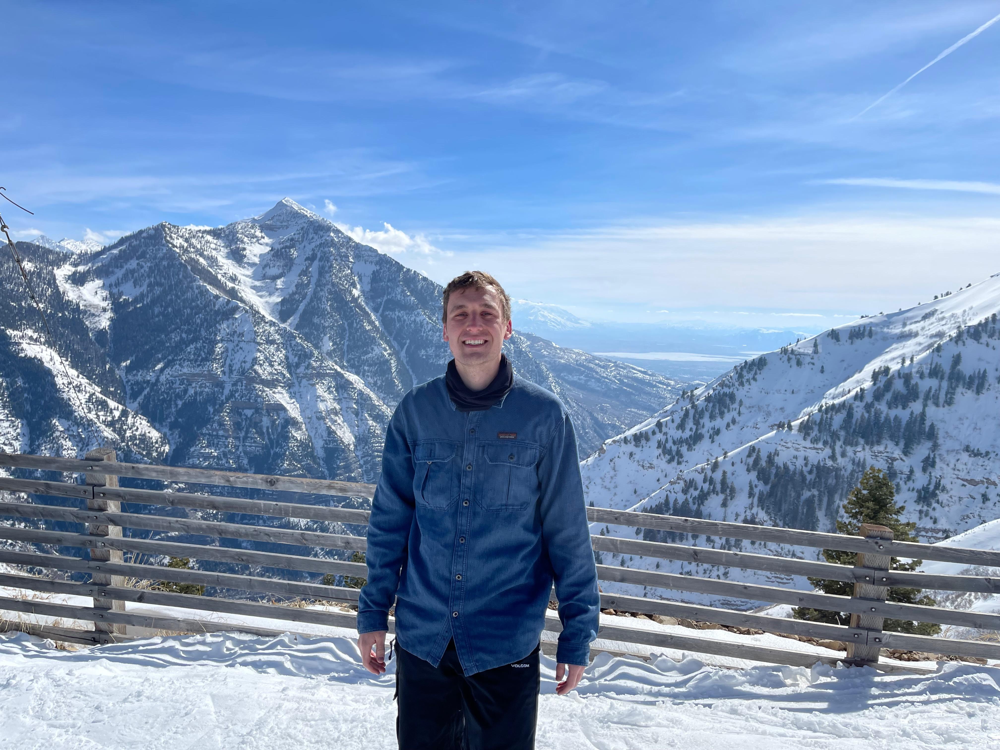

This is Preston Gagnon. He has been in Rexburg for a total of 3 and a half years. He orignally comes from Georgia where he graduated highschool, but he did not start skateboarding until he come to Idaho. Preston started skating in 2018. He skated for two and a half years before leaving on a mission to Pocatello, Idaho and later Berlin, Germany. Preston returned home in Febuary of 2022 and has been skating consistantly since being back. He loves skating ledges, rails, and stairs (mostly 4-5 stairs). "Rexburg is actually a great place for skateboarindg! The campus is on a mellow hill so hill bombs witht the homies through campus is always a good time. There are plenty of good spots on and off of BYU-I campus. There are also plenty of Skateparks around; including one in Rexburg, Rigby, St. Anthonys, and Idaho Falls." -Preston